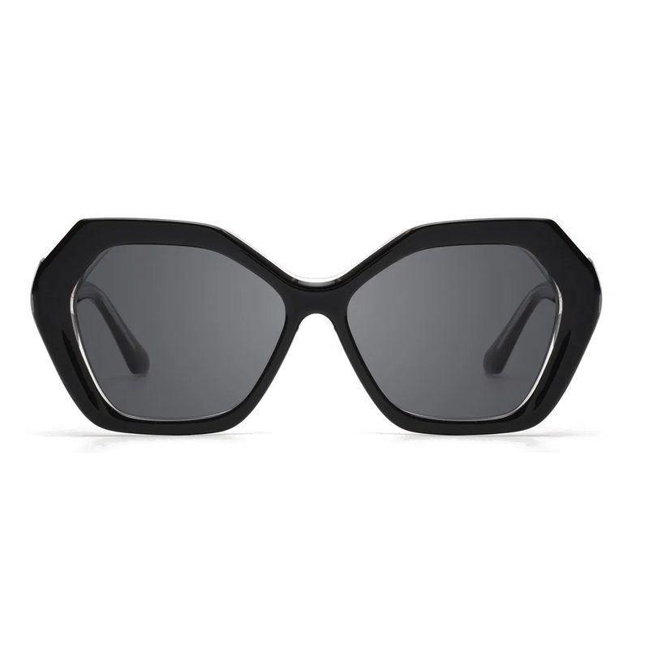
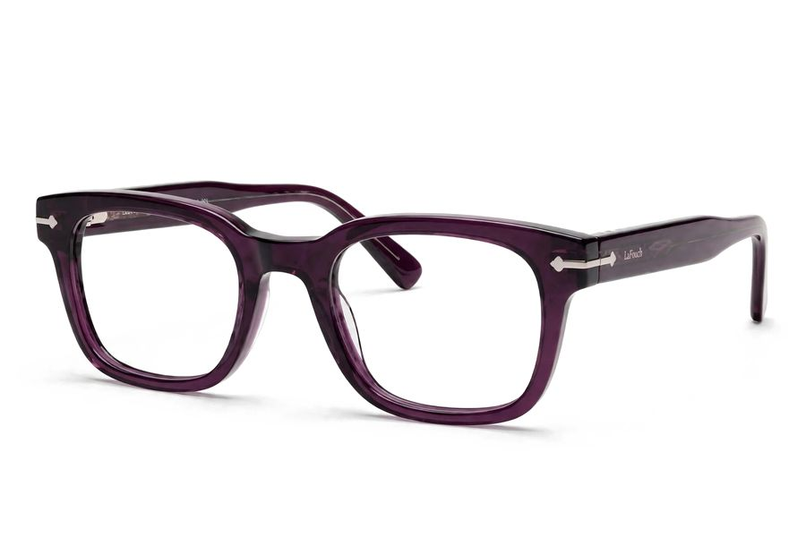
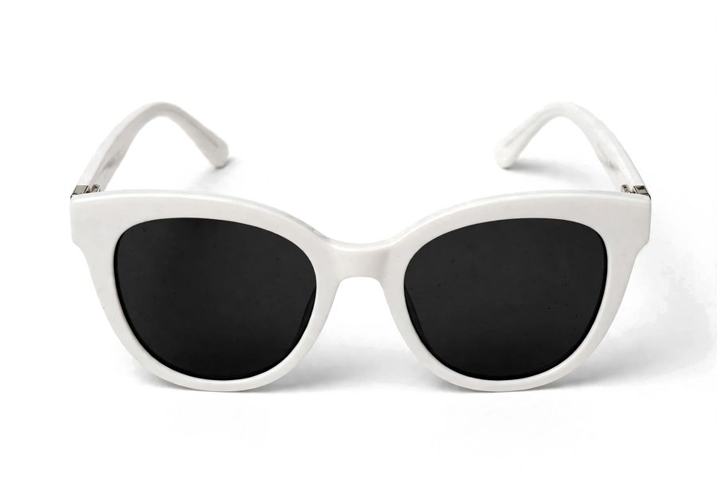

LA FOUCH






Celular (até 699 px)
barra embaixo · 2 colunas · ficha por cima
barra embaixo · 2 colunas · ficha por cima
LA FOUCH
GR3350Vender · Estoque · Histórico
G$ 115.000
Tablet (700 a 1099 px)
3 colunas · ficha ao lado da lista
3 colunas · ficha ao lado da lista
LA FOUCH
Início
Catálogo
Estoque
Números
Caixa
Pedidos
Clientes
Loja online
Ajustes
Início
Catálogo
Estoque
Números
Caixa
Pedidos
Clientes
Loja online
Ajustes


GR3350 · Lentes de leituraVender · Estoque · Histórico · Site · Preço
G$ 115.000
Computador (1100 px ou mais)
menu na lateral · 4 a 6 colunas · ficha fixa à direita · atalhos de teclado
menu na lateral · 4 a 6 colunas · ficha fixa à direita · atalhos de teclado
Mesmos 3 tamanhos do siteO app usa as mesmas faixas de largura do site (699 e 1100 px) e as mesmas regras anti-colisão: botão fixo nunca cobre texto, barra de comprar sobe acima do teclado, texto grande (Ajustes › tamanho) quebra linha em vez de cortar. Girar o tablet muda o layout na hora.